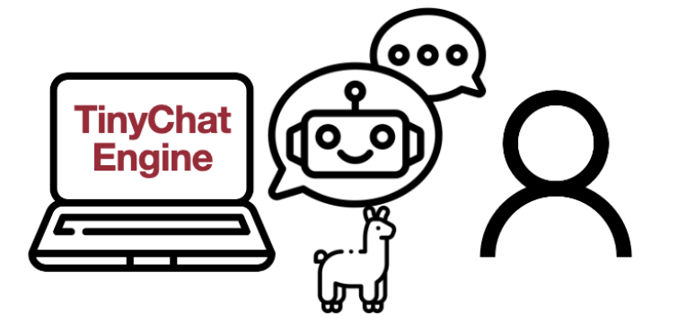

Selected Publications


I am a fourth-year undergraduate student at NYU, majoring in computer science with minors in mathematics and cybersecurity. I am working remotely with Prof. Song Han at the MIT HAN lab as a research intern. My research interests lie in efficient deep learning, with applications in NLP. Other interests include AI in Scientific Research and computational biology.